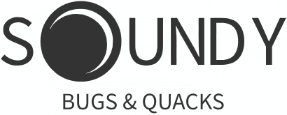
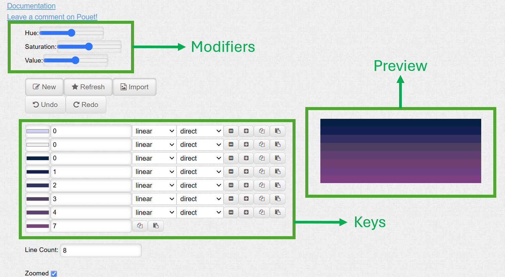
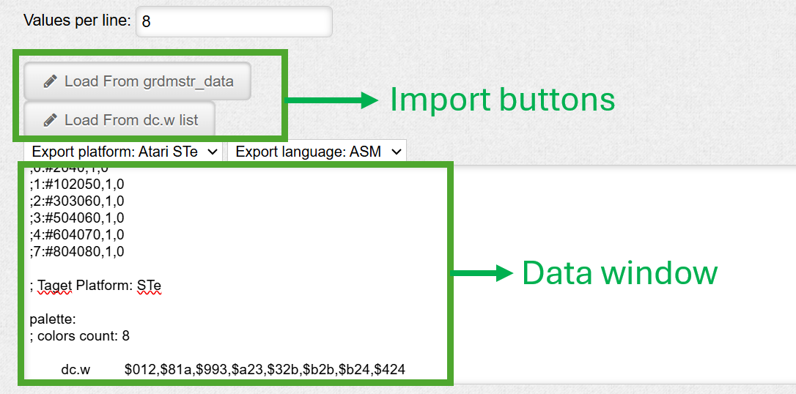

The Gradient Master (TGM)
Last update: Feb 5th 2025
Why?
- Allow graphic artists to create & preview how a gradient will behave on the real machine using 12 bits colors (Amiga, Atari STe), especially to avoid ugly banding effects
- Provide programmers with palettes, directly as assembler source code.
- Let the coders use their Windows or Linux machine, and the artists use their Mac. Hence the choice of a web tool (unfortunately, I suck at javascript).
Layout - Creation zone

The Modifiers
Hue, Saturation, Value. They affect only the preview, and the exported data. Keypoints are not impacted and will keep the value you assigned them. Play with these sliders, you’ll understand.
The Keys
For each key, you have the following items (from left to right):
- Color : just click on the colored rectangle to pick a new color
- Line index : the Y of the key (from 0 to Line Count)
- Interpolation : How colors are interpolated from this key to the next key. 3 possible values:
- linear : linear interpolation
- near → far : fake perspective (cosine interpolation) with current key being near and next key being far
- far → near : fake perspective (cosine interpolation) with current key being far and next key being near
- Dither mode : how colors are dithered between the current key and next key. 4 possible values:
- direct : no modification, pure value
- shuffle : lines are interleaved to give more “texture” to the gradient
- soft dither : light dithering is applied to gradients
- Hard dither : hard dithering is applied to gradients
- delete key (minus icon) : deletes the key
- duplicate key (plus icon) : duplicates the key (inserts a copy of the key below it)
- copy key : copies the key to an internal clipboard
- paste key : copies the internal clipboard to the key
The Preview
Shows you your gradient, using 12 bit colors. The gradient is displayed zoomed by default (to ease edition/preview). The “zoomed” check box (at the bottom-left of the above screenshot) enables/disables zoomed mode.
Other items
- “New” Creates a new empty gradient
- “Refresh” makes sure the preview & export zones are refreshed
- “Import” is a specific case: If you already have a picture featuring the gradient you need, you can just click this button to load your image file. Importing an image will do things the dirty way: 1 keypoint is created per line, the color of the keypoint being the first pixel of each line in your image.
- “Undo / Redo” guess what these ones do…
- Line Count : Number of lines you want your gradient to be (height). This should update the preview zone immediately
Layout - Export zone

The Data window
This window shows the current gradient as code, but you can also paste data there to update the gradient. The data is composed of a header called grdmstr_data followed by the “dc.w” data itself. The grdmstr_data is given as assembly comment (‘;’) so that it does not interfere with your code. This data contains the keys used to generate the gradient so that you can reload it later to update it. To load a previously edited gradient, just paste the grdmstr_data text and hit the «Load From grdmstr_data» button.
The Import buttons
- “Load From grdmstr_data”: As described above, allows to re-import exported data using the keys info.
- “Load From dc.w list”: In case you don’t have grdmstr_data info, and you only have a series of dc.w to import, follow these steps:
- Paste your dc.w list in the Data window
- Choose which platform you are importing from using the “Export platform” combo-box.
- Hit the “Load From dc.w list” button.
Note that as there is no key info in a dc.w list, one key will be inserted for every word.
Other items
• Values per line : Allows to format the assembly code dump (how many words per line in the “dc.w” part).
• Export platform : Chooses for which platform data is imported / exported.
• Export languages: Chooses export data language (asm or C).